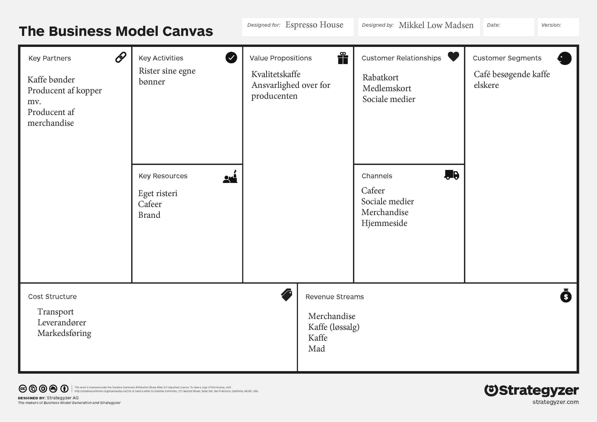

Business Model Canvas (forretningsmodel) for Espresso House
Al dokumentation er fundet på Espresso Houses hjemmeside:
Espresso House-
Value Propositions - Kundeværdi
Kunder kan købe kvalitetskaffe og nyde den i hyggelige omgivelser -
Customer Segments - Kundesegment
Espresso House kunder er alm. cafégæster, men især personer som sætter pris på en god kop kaffe. Målgruppen dækker alle som sætter pris på en god kop kaffe uanset alder. -
Key Partners - Samarbejdsspartnere
Espresso House har flere samarbejdspartnere. Deres samarbejdspartnere er producenter af:- Kaffe (kaffebønder/farme)
- To-go kopper
- Interiør
- Merchandise
-
Key Activities - Aktiviter (værdiskabende)
Espresso House har deres eget risteri hvor de rister bønnerne som er handlet og købt direkte af kaffebønder/farme. Det gør de for at sikre at bønderne får en fair fast pris som ikke går op og ned i forhold til det generelle marked. Espresso House kan derfor servere kaffe med god samvittighed. -
Key Resources - Ressourcer
- Den gode relation med kaffebønderne som producerer kaffe af høj kvalitet (Specialty Coffee)
- Deres eget risteri som sikre at bønnerne ristes fuldstænding som de selv ønsker det og sikre den høje kvalitet
-
Customer Relationships - Kunderelationer
Espresso House ønsker faste kunder som kommer igen og igen. De gør derfor brug af rabatkort/stempelkort og gavekort. -
Channels - kanaler (kontaktflader imod kunden)
Espresso House kommer ud til deres kunder igennem sociale medier, deres caféer, deres hjemmeside og merchandise. -
Cost Structure - Omkostninger/Udgifter
Espresso House har udgifter i forhold til at drive deres caféer - såsom husleje, lønninger, varer, vand, el osv. Derudover hr de udgifter til transport af bønner, markedsføring og diverse producenter. -
Revenue Streams - Indtægts kilder
Espresso House tjener penge på deres salg af kaffe, mad, kaffe i løssalg og merchandise.